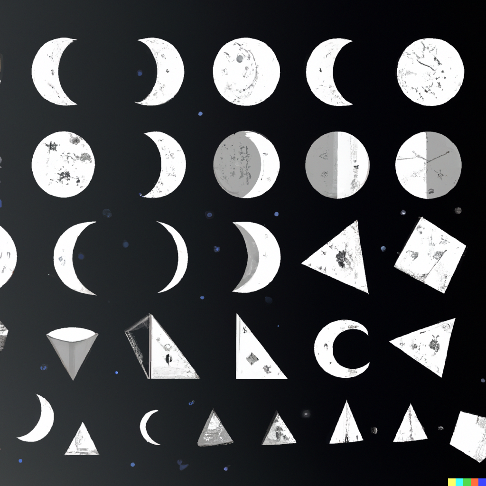

Innhold:
En introduksjon
Ordets beskrivelse
Den matematiske beskrivelsen
Fargens dannelse ved bruk at den matematiske og ordets beskrivelse
Naturens biologiske og visuelle dannelse
Den universelle begrensningen og
Universet og dens formering
- all dens dannelse i universet: matematikken og ordets beskrivelse
- hvor det er biologisk mangfold: matematikken og ordets beskrivelse
Det intelligente liv og dets begrensing:
- Det fysisk biologiske mangfoldet: matematikken og ordets beskrivelse
- Det psykologiske tankesettet & handlingene til det intelligente livet: matematikken og ordets beskrivelse
- Objekter som skapt og formet av det biologiske og intelligente livet: matematikkens beskrivelse og ordets beskrivelse
Introduksjonen:
Teorien om en begrensing assosiert med alt handler om til det nåværende tidspunktet. Den matematiske og alfabetiske forklaringen av begrensningen baserer seg på tiden, det vil si at beregningen har et sluttpunkt ved det siste tidspunkt.
Ordets beskrivelse:
Beskrevet ved hjelp av ord utformet av det alfabetiske. Som beskriver hvordan det universelle ser ut (fargens alfabetiske forklaring) og oppfører seg på. Den alfabetiske forklaringen er begrenset ut i fra antall ord i ordboken.
Matematikkens beskrivelse:
Og ut ifra hver eneste Det finnes av et begrenset antall former (og fargens kodeks som vi allerede vet er kjent for å inneha et begrenset antall) er det et matematisk spørsmål
For matematikkens former er elementært. Det er et begrenset antall former i dette universet.
Ut ifra det objektenes dannelse:
Finnes det et matematisk begrenset antall uvennlig (negativt ladet) og vennlig (positivt ladet) kombinasjoner:
Naturlige
Det fast formede elementet/objektet laget av det naturlige
Det Kunstige objektet laget av det intelligente livet
Ut ifra biologiens dannelse:
Det er en fast bestemt matematisk forklaring på selve formeringen og resultatet av det biologiske. Det er ikke ulike kombinasjoner det biologiske kan bli til, da den matematiske og kjemiske formelen har bestemt at ved reprodusering mellom det biologiske vil være en mottaker og sender, disse 2 er igjen skapt ved reprodusering av samme tilfelle, det er dermed slik at hele det nåværende biologiske mangfoldet er produsert av den tidligste mottaker og sender, det vil si at det er bestemt matematisk/kjemisk rekkefølge som starter ved den første reproduksjonen av et liv.
Det er klart at et menneske ikke kan reprodusere seg med en elefant, det er da fast bestemt at det biologiske mangfoldet kun kan reprodusere seg med sine egne arter.
Det finnes da derimot ulike kombinasjoner innad i de forskjellige artene, det er da disse ulike kombinasjonene ved hjelp av reproduksjon mellom mottaker og sender av samme art, som ved hjelp av matematikkens beskrivelse vil gi et begrenset antall mulige visuelt fysisk design.
Ved bruk innhenting av data på hva som er vennlige(positive) og uvennlige(negative) visuelt fysisk mulige design, av alle mulige matematiske former, samt det den alfabetiske beskrivelsen får man da det begrensede antallet.
Naturens biologiske og visuelle dannelse og dens begrensede formering
Planetens naturlige mangfold
Eksempel: røtter, planter, trær, ja til med gresset på plenen har en begrensning i forhold til tiden i antall visuelle og biologiske formeringer. Det vil si at på bakgrunn av alle mulige matematiske former og biologiske prosesser, samt den alfabetiske beskrivelsen(+all fargenes dannelse mønster)
Hvordan kan en A.I. finne alle mulige design av både av det visuelle og biologiske prosessene: ved hjelp av en datatrent maskin som tester alle mulige former og størrelser. Samt all dens mulige biokjemiske reaksjoner fra den oppstår, den bio kjemiske utviklingen til den fases ut, som igjen baserer på fysikken og den bio-kjemiske begrensingen.
Hva er fysikken og den bio-kjemiske begrensingen: all dens mulige forklaringer, kalkulasjoner og reaksjoner som er begrenset i forhold til tiden.
/
Den matematiske begrensingen på:
Universet og dens formering:
- all dens dannelse i universet
- hvor det er biologisk mangfold
Universets objekter og den matematiske begrensningen på bevegelse
Ved bruk innhenting av data på hva som er vennlige(positive) og uvennlige(negative) visuelt fysisk mulige design/elementer, av alle mulige matematiske former, samt det den alfabetiske beskrivelsen

Det biologiske livet på planeten jorden og dens matematiske begrensede formering
Se biologiens dannelse.
Det som er universelt begrenset til å eksistere.
- I universet, med dens naturlige "steiner/elementer" som på ulike og til et begrenset antall måters funksjoner
- på planeten:
Naturen og dens begrensede mulige utvikling basert på antall mulige formasjoner, antall mulige mutasjoner, antall mulige kjemiske/biologiske prosesser(som er kjent, og som kan beskrives)
Det vil si at vi ikke har mulighet til se det mulige antall begrensninger knyttet til naturen i nåværende tidsalder fordi vi ikke kjenner til alle mulige kjemiske/biologiske prosesser.
Men vi kan se antall mulige former på selve designet
Det intelligente liv og dets begrensing:
- Den fysisk biologiske mangfoldet
- Det psykologiske_tankesettet & handlingene
- Objekter som skapt av det biologiske
/
Men vi har mulighet for se et stort antall mulige begrensninger i forhold til det intelligente livet på jorden, basert på alle mulige forklaringer ut ifra det alfabetiske, samt den matematiske beskrivelsen som baserer seg på antall mulige, som beskriver det fysiske og det som gjør at det intelligente liv handler og tenker.
Den matematiske begrensingen på det visuelt biologiske:
På det intelligente liv::
- kroppen - hver kroppsdel - funksjonene (hva er disse begrenset til å være utformet på) hva er mulig
- hjernen - det psykologiske - funksjonene (hva er dette begrenset til å utforme seg)
- hvor mange ulike design ville hver kroppsdel sett ut hvis man når et begrenset antall ut i fra hver eneste form som er mulig å skape/designe som finnes.
Ordets beskrivelse av hvert eneste design basert hver farge, hver formasjon, hver eneste funksjon,
&
Ordets og den matematiske beskrivelsen på begrensningen i antallet til:
- tankesettet -
- hva er alle mulige
følelser av alle mulige tilstander- tankene av alle mulige forklaringer satt sammen av ord - fantasiene av alle mulige forklaringer satt sammen av ord- ytre påvirkningene av alle mulige forklaringer satt sammen - oppførsel nivåer av alle mulige oppførsel tilstander - forståelse nivåer av alle mulige forståelse tilstander (hva er disse begrenset til å utføre basert på alle ord satt sammen som beskriver alle mulige former for forklaringer)
- Hvordan blir tankesettet til, et resultat av oppveksten, av alle mulige kombinasjoner av ytre påvirkninger
- Hva påvirker tankesettet i nåværende øyeblikk, av alle mulige kombinasjoner av ytre påvirkninger og som et resultat av hva tankesettet har utviklet seg til å bli som et resultat av oppveksten
Det begrensede resultatet blir den maksimale matematiske antall mulige kombinasjoner ut ifra antall mulige alfabetiske beskrivelser av tankesettet, av det indre stemmebåndet og de ytre påvirkningene.
- handlingene
- rundt deg i øyeblikket - gjennom livet - alene - med andre - med objekter - med naturen (hva er disse begrenset til å utføre) (basert på alle mulige ord som beskriver hver eneste handling, samt med den matematiske beskrivelsen på antall mulige)
&
Den matematiske og alfabetiske forklaringen på det begrensede antallet:
Intelligente livs skapte Objekter: I vårt tilfelle det menneskeskapte designet
- en bil har et begrenset antall former basert på det vennlige (det vi ser på som positivt) og det uvennlige (det vi ser på som negativt). Hvis man samler et datasett med alle matematiske mulige vinkler og formasjoner vil man få det begrensede antallet på et objekt som bilen.
- et hus på samme måte
- en fotball på samme måte
- en oppvaskmaskin
Ingenting er uendelig frem til det nåværende tidspunkt, alt er begrenset i bevegelse med tiden.